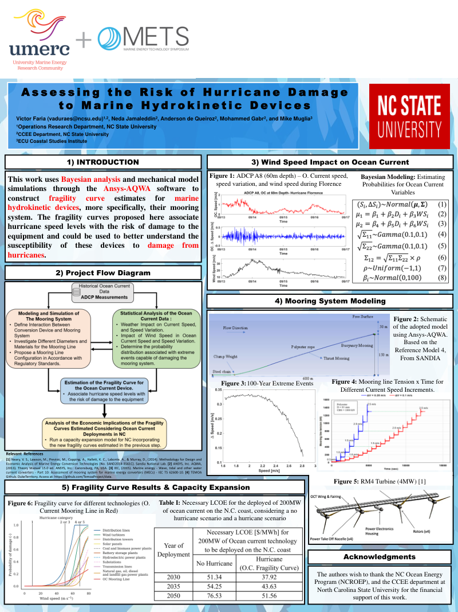
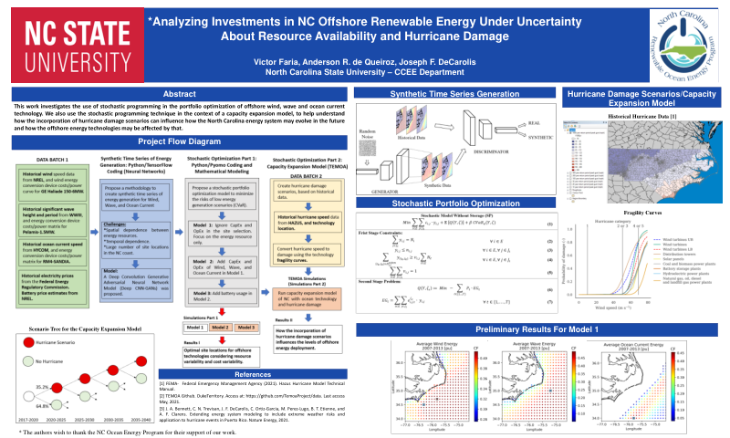

Presentations
Conference talks and research posters on energy planning, optimization, and infrastructure risk.
No presentations match these filters. Try another year or search term, or clear the filters.
2026
Multidimensional Uncertainty Assessment in a Capacity Expansion Model for the U.S. Power System
Uncertainty assessment for investment decisions in the ReEDS capacity expansion model.
Victor A. D. de Faria, Brian Sergi, and Patrick R. Brown
Presented by: Patrick R. Brown
2024
Exploring the Feasibility of Co-located Marine Renewable Energy Systems: A Mooring System and Economic Analysis in the North Carolina Coast
Design and economic assessment of marine renewable energy systems.
Neda Jamaleddin, Victor A. D. de Faria, Anderson R. de Queiroz, and Mohammed Gabr
Presented by: Neda Jamaleddin
Fused Portfolio Optimization for Harnessing Marine Renewable Energy Resources: Exploring Opportunities for Improving Energy Density and Levelized Cost of Electricity
Joint decisions about marine energy portfolios and device design.
Mary Maceda, Victor A. D. de Faria, Chris Vermillion, and Anderson R. de Queiroz
Presented by: Mary Maceda
Energy Systems Capacity Expansion Planning Under the Risk of Hurricane Damage
Representing infrastructure vulnerability in electricity investment decisions.
Victor A. D. de Faria and Anderson R. de Queiroz
Presented by: Victor A. D. de Faria
2023
Energy Systems Capacity Expansion Planning Under the Risk of Hurricane Damage
Stochastic electricity planning that accounts for hurricane damage.
Victor A. D. de Faria and Anderson R. de Queiroz
Presented by: Victor A. D. de Faria
Modeling Energy Storage in Capacity Expansion Models: An Application to TEMOA Italy
Representing storage and operational detail in energy planning models.
Matteo Nicoli, Victor A. D. de Faria, Anderson R. de Queiroz, and Laura Savoldi
Presented by: Matteo Nicoli
2022

Poster preview · PDF
Assessing the Risk of Hurricane Damage to Marine Hydrokinetic Devices
Fragility modeling for ocean current devices exposed to extreme conditions.
Victor A. D. de Faria, Neda Jamaleddin, Anderson R. de Queiroz, Mohammed Gabr, and Mike Muglia
Presented by: Victor A. D. de Faria
2021

Poster preview · PDF
Analyzing Investments in NC Offshore Renewable Energy Under Uncertainty About Resource Availability and Hurricane Damage
Portfolio decisions under uncertain renewable production and hurricane damage.
Victor A. D. de Faria, Anderson R. de Queiroz, and Joseph F. DeCarolis
Presented by: Victor A. D. de Faria